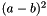
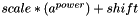
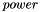
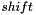
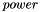
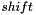
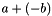
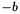

Several reasons exist for why the Model Optimizer could not generate an Intermediate Representation for a model. However, in some cases, the Intermediate Representation could be generated after providing certain hints to the tool. The examples of hints below are mostly related to TensorFlow*, but potentially could be actual for models created in any framework:
- Topology contains an operation (or a sub-graph of operations) not known for Model Optimizer, but this operation (sub-graph) could be expressed as a combination of known operations. A hint would be a description of this combination to the tool).
- Sub-graph of operations in the topology expresses a single layer known to Inference Engine.
- TensorFlow and Inference Engine use different layouts of tensors, NHWC and NCHW respectively. If some tensor in NHWC layout is flattened (for example, all the dimensions are squashed into single dim), it is not possible to convert it to NCHW layout required for Inference Engine, so Model Optimizer cannot produce correct Intermediate Representation.
The detailed solutions for the examples above are given later, the next subsection shows what is common in all three examples.
Sub-graph Replacement
In these cases, the sub-graph (or a single node) of initial graph is replaced with a new sub-graph (single node). The sub-graph replacement consists of the following steps:
- Identify an existing sub-graph for replacement
- Generate a new sub-graph
- Connect a new sub-graph to the graph (create input/output edges to the new sub-graph)
- Create output edges out of a new sub-graph to the graph
- Do something with the original sub-graph (for example, remove it)
Model Optimizer provides several ways to perform most of the sub-graph replacement steps. The next subsections describe these methods.
Replace a Single Operation with a Sub-graph of Operations
For example, there is an operation SquaredDifference in TensorFlow which calculates , where  and
and  are input tensors. Inference Engine does not support such operation. However,
are input tensors. Inference Engine does not support such operation. However, SquaredDifference could be expressed using two Power operations and one Eltwise Add. The Power operation calculates , where is a tensor and  ,  and  are float values. The first
,  and  are float values. The first Power operation negates the value of tensor . The second one is used to square the result of  which is calculated using the Eltwise Add operation applied to tensor and tensor .
Given that, we can replace all SquaredDifference operations in the initial model with two Power and one Eltwise operations. The replacer is implemented in the following file <INSTALL_DIR>/deployment_tools/model_optimizer/extensions/front/SquaredDifference.py.
Model Optimizer internal representation of the graph uses the networkx module.
Key lines:
- Line 1: Imports this module.
- Line 3: Imports class
FrontReplacementOpthat is used to replace operation of particular type with a new sub-graph. This class performs the first step of the sub-graph replacement (identifies an existing sub-graph for replacement). It is important to mention that the replacement happens before shape inference and creation of data nodes representing tensors with values. At this stage of model conversion pipeline, all nodes in the graph are operation nodes or nodes of typeConstthat produce tensor with fixed value embedded into the node. - Line 4: Imports class
Noderepresenting a single node in the computation graph. - Lines 5 - 6: Import classes representing operations
PowerandEltwise. These classes are inherited from base classmo.ops.Opthat represents operation and stores its attributes. - Line 9: Defines class
SquaredDifferenceinherited fromFrontReplacementOp. This is a replacer class that is automatically registered and executed by Model Optimizer. Since the class is located in the common (not framework) specific directory<INSTALL_DIR>/deployment_tools/model_optimizer/extensions/front, it is used for replacement for all supported frameworks. - Line 15: Defines the class variable
opthat stores the name of the operation to be replaced. In this case, it isSquaredDifference. - Line 16: Defines class variable
enabledthat controls whether the replacer is enabled or not. The only function that should be implemented in the class isreplace_op. It gets graph to operate on and an instance of node of desired operation (SquaredDifferencein this case). This function performs step two and three of the sub-graph replacement (generates a new sub-graph to replace with and connects a new sub-graph to the graph). - Lines 19 - 21: Create instances of operations classes with required attributes.
- Line 23: Creates a sub-graph from the operations defined above. The
create_nodemethod of theOpclass generatesNodefrom theOpand uses single mandatory argument - the list of input nodes (represented as instances ofNodeclass) to create input edges to the node being generated. Inputs of theSquaredDifferencenode are retrieved usingnode.in_node(0)andnode.in_node(1)method calls. TheEltwise Addnode gets first input as initial first input ofSquaredDifferencenode, the second input ofaddis the result of negation of the second input ofSquaredDifferencenode:[add.create_node([node.in_node(0), negate.create_node([node.in_node(1)])])]. Then the result ofAddnode is squared.out_nodenode performs this calculation.
The replace_op function returns a list of node names used to create output edges of the sub-graph to connect it with the rest of the graph. Each element of the list describes mapping between old output edge of the matched node and new sub-graph node and output edge index. The i-th element of the list corresponds to the i-th output tensor of the matched node. In this case, SquaredDifference produces single tensor through output port 0, so the returned list contains single element. In general, each element is a tuple, where the first element is the name of a new node producing required tensor and the second is the output port for that tensor. If the output port is 0, it is possible to use shortcut - just the name of the node instead of a tuple. Line 26 uses this shortcut. The returned value is used to create the new sub-graph output edges (step 4 of the sub-graph replacement).
Default implementation of the FrontReplacementOp class removes matched node and all its input/output edges (step 5 of the sub-graph replacement).
Another example of such kind of replacement is in the <INSTALL_DIR>/deployment_tools/model_optimizer/extensions/front/Sub.py class where all instances of Sub operations are replaced with two operations: Power to negate the second argument and the Eltwise to perform elementwise add.
Replace Sub-graph of Operations with a New Sub-graph of Operations
The previous example considered situation when one single node of a specific type is replaced. When it is necessary to replace a sub-graph of operations it is necessary to tell Model Optimizer how to identify this sub-graph. There are three ways to achieve that:
- Use graph isomorphism pattern of the networkx module
- Use nodes name pattern to identify
scope(according to TensorFlow terminology) to be replaced - Use sets of
startandendnode names to match all nodes "between" them
The next sections explain each option using real examples.
Replace Sub-graph of Operations Using Graph Isomorphism Pattern
networkx Python* module provides methods to find graph isomorphic to the given one using nodes and edges match: for example, networkx.algorithms.isomorphism.categorical_node_match, networkx.algorithms.isomorphism.categorical_multiedge_match. Model Optimizer uses these methods and provides simple API to use that feature.
For example, the Caffe* has layer called Mean-Variance Normalization (MVN), which is also supported by the Inference Engine. This layer is implemented with low-level operations in TensorFlow: Mean, StopGradient, SquaredDifference, Squeeze and FusedBatchNorm. Model Optimizer should replace sub-graph with these operations with a single Inference Engine layer of type MVN.
The file <INSTALL_DIR>/deployment_tools/model_optimizer/extensions/front/tf/mvn.py performs such a replacement. The first part of the file is:
Key lines:
- Line 1: Defines class
MVNinherited from classFrontReplacementSubgraphthat performs sub-graph replacement using sub-graph isomorphism pattern. - Line 3: Sets class variable
enabledto value True meaning that this replacer is enabled. - The function
patterndefines the sub-graph constraints to be matched. It returns a dictionary with four keys:- the
nodesdefines a list of nodes to be matched. Each element in the list is a tuple. The first element is the alias name assigned for the matched node, the second element is a dictionary with desired attributes of the node. - the
edgesdefines a list of edges to be matched. Each element in the list is a tuple. The first and the second elements are the start and end edge nodes alias names respectively. The third element is a dictionary with desired edge attributes. - the
node_attrscontains the names of nodes attributes to use during sub-graph isomorphism search. the
edge_attrscontains the names of edges attributes to use during sub-graph isomorphism search.The sub-graph is matched if all provided constraints are satisfied. If at least one node with desired attributes is missing or at least one defined edge is absent, the sub-graph is not matched.
- the
- Line 9: Adds constraint that sub-graph should contain node with attribute
opwith valueMean. The matched node gets an alias namemean. The same way the line 10 add constrain for nodeStopGradient, the matched node gets an alias namestop_grad. - Line 18: Defines edge from node with alias name
meanto node with alias namestop_gradhaving attributeinequal to 0. This means that the output of nodemeanis connected to the nodestop_gradas a first input (Model Optimizer uses zero-based indexing that is whyinis 0). Another example of defining the edges constraints is in line 25 where the edge fromsqueeze_meanis connected to thefbnnode as fourth input. - Lines 26 - 27: Specify a list of attributes to be checked. In fact, these lists are just list of all keys in the dictionaries for node and edge attributes.
Now when the Model Optimizer knows how to find sub-graph (step 1 of the sub-graph replacement), it is necessary to implement function that will perform actual sub-graph replacement (step 2 and 3). The code for this function is:
The function accepts two arguments - the graph and the dictionary match. The keys in the dictionary are the alias names of matched nodes (defined in the nodes list in the function pattern) and the values are the matched node of the graph (the instance of Node object).
The function generates new sub-graph with node of type MVN and two nodes of the type Eltwise calculating sum and product. There is nothing interesting in how the graph is generated and mathematics behind that, so attention will be put to two aspects of this function.
The first one is the call to function replace_node in line 36. FusedBatchNorm node is replaced with the output node of the generated sub-graph: all input edges of the FusedBatchNorm node are re-connected to the new_subgraph node, all consumers of the FusedBatchNorm node are updated to get inputs from the new_subgraph node. This action connects newly generated sub-graph with an existing graph (step 4 of the sub-graph replacement).
The second one is that the default implementation of the inference function for MVN operation is overwritten. In line 16, the default implementation of the inference function for MVN is saved to attribute old_infer. In line 17, the new inference function is saved to the instance of the MVN operation class. The new inference function code looks the following way:
The infer function is needed to infer value of the node (if it is possible) and to infer shapes of the output tensors of the node (mandatory). The custom infer function performs additional checks that describe limitations of the MVN layer implementation in the Inference Engine. For example, reduction indices for mean and variance must be constants (line 10), while in TensorFlow they could be computed during model inference. In addition, the function removes two edges from the graph (lines 17 and 18) because all required information is already stored in the MVN node attributes. This is due to different MVN layer implementation in Inference Engine and TensorFlow*: mean and variance are attributes of the node in Inference Engine while in TensorFlow they are input tensors. Edges are not removed in the replace_sub_graph function, because these edges are used in the infer function (lines 7-12).
The last action in the infer method (line 19) is to call default infer function for the MVN, which is saved in the attribute old_infer of the node to infer output tensors shapes.
On the step 5 of the sub-graph replacement, six matching nodes are automatically removed during the dead code elimination pass that is performed after applying of custom sub-graph replacements defined. Six matching nodes are no more connected to the inputs of the network after replacing node fbn with a newly created sub-graph node. Since they are not marked as output nodes (using --output command line parameter), they could be removed.
The replacement works for all sub-graph isomorphism instances found in the network.
Replace Sub-graph of Operations Using Nodes Name Pattern
TensorFlow uses a mechanism of scope to group related operation nodes. It is a good practice to put nodes performing particular task into the scope. This approach divides a graph into logical blocks that are easier to review in TensorBoard*. The scope, in fact, just defines a common prefix for the node names in the scope.
For example, Inception topologies contain several types of so-called "Inception blocks". Some of them are exactly equal to each other, but located in different places of the network. For example, Inception V4 from tensorflow.contrib.slim module has inception blocks Mixed_5b, Mixed_5c and Mixed_5d with exactly the same nodes with the same attributes.
Now consider situation when someone implemented these Inception blocks extremely efficiently using single Inference Engine custom layer called InceptionBlock and would like to replace these blocks with instances of the layer to decrease inference time. Model Optimizer provides mechanism to replace sub-graph of operations defined by the regular expressions for the node names prefixes (scope). In this particular case, some of the patterns are: .*InceptionV4/Mixed_5b, .*InceptionV4/Mixed_5c and .*InceptionV4/Mixed_5d. Each pattern starts with .*, because a prefix InceptionV4 is added to all nodes names during a model freeze.
The sub-graph replacement using nodes name pattern is a bit trickier than replacements of single operation and networkx isomorphism pattern described above. You should do the following additional steps in comparison with previously described replacements:
- Prepare configuration file template defining node names patterns and information about custom layer attributes.
- Run Model Optimizer with command line parameter to add information about input and output nodes of the specified sub-graphs.
Consider the following possible configuration file for the Inception Block replacer:
The .json file contains list of dictionaries. Each dictionary defines one replacement. Each replacement is defined with several keys:
id(mandatory) is a unique identifier of the replacer. It is used in the Python* code that implements sub-graph replacement to link the class and the replacement description from the configuration file.match_kind(mandatory) is a string that specifies what matching algorithm is used. Currently supportedscopeandpoints. In this example, the first one is considered. Thepointsmatch kind is described below.instances(mandatory) specifies instances of the sub-graph to be matched. It contains a list of node names prefixes patterns for the match kindscope.custom_attributes(optional) is a dictionary with static attributes of the layer to be dumped to Inference Engine Intermediate Representation.xmlfile.op(optional) is used only if the sub-graph replacement Python code is not needed, because the sub-graph should be replaced with a single node of typeop. If this attribute is not set, it is necessary to implement Python code with sub-graph generation code. Both options are considered in this example.
When the configuration file is ready, run the Model Optimizer with regular command line parameters pointing to the file with model and input shapes (if necessary) and additional parameter --tensorflow_custom_operations_config_update pointing to the generated configuration file. If the file is correct, Model Optimizer adds two keys to the InceptionBlockReplacer dictionary: inputs and outputs with the following content:
The value for key inputs is a list of lists describing input tensors of the sub-graph. Each element of the top-level list corresponds to one unique input tensor of the sub-graph. Each internal list describes a list of nodes consuming this tensor and port numbers where the tensor is consumed. Model Optimizer generates regular expressions for the input nodes names to uniquely identify them in each instance of the sub-graph defined by the instances. Denote these nodes as input nodes of the sub-graph.
In the InceptionV4 topology, the InceptionV4/Mixed_5b block has four input tensors from outside of the sub-graph, but all of them are produced by the node InceptionV4/Mixed_5a/concat. Therefore, the top-level list of the inputs contains one list corresponding to this tensor. Four input nodes of the sub-graph consume the tensor produced by InceptionV4/Mixed_5a/concat node. In this case, all four input nodes consume input tensor into port 0.
The order of items in the internal list describing nodes does not matter, but the order of elements in the top-level list is important. This order defines the order in which the Model Optimizer attaches input tensors to a new generated node if the sub-graph is replaced with a single node. The i-th input node of the sub-graph is obtained using call match.single_input_node(i) in the sub-graph replacer code. More information about API is given below. If you need to change the order of input tensors, you can edit the configuration file in the text-editor.
The value for the key outputs is a list describing nodes of the sub-graph producing tensor that goes outside of the sub-graph or does not have child nodes. Denote these nodes as output nodes of the sub-graph. The order of elements in the list is important. The i-th element of the list describes the i-th output tensor of the sub-graph, which could be obtained using call match.output_node(i). The order of elements can be manually changed in the configuration file. Model Optimizer uses this order to connect output edges if the sub-graph is replaced with a single node.
Now, when meaning of inputs and outputs attributes is clean, return back to the replacer implementation. The replacer InceptionBlockReplacer contains attribute op with the value InceptionBlock, which means that the identified sub-graph should be replaced with a single layer of type InceptionBlock. This layer is not known for the Model Optimizer, so it is necessary to define it. See Extending the Model Optimizer with New Primitives. You must create file extension/ops/InceptionBlock.py with the following content:
The shape inference function is not defined. In this case, Model Optimizer uses TensorFlow fallback to calculate shapes of the sub-graph output tensors.
Run the Model Optimizer with the regular command line parameters, path to the model file and input shape (if necessary), and the parameter --tensorflow_use_custom_operations_config and point to the created configuration file. Model Optimizer generates Intermediate Representation .xml file with three sequential layers of type InceptionBlock like in the following example:
The implementation of the sub-graph replacement by scope with a single layer is complete. The next subsection explains how Model Optimizer replaces sub-graph identified by start/end nodes (points) with another sub-graph.
Replace Sub-graph of Operations Using Points
In this scenario, for the matching algorithm user defines the sub-graph via a set of "start" and "end" nodes. Given the set, the Model Optimizer performs the following steps:
- Starts graph traversal from every start nodes following the direction of the graph edges. The search stops in end nodes or in case of nodes without further children. All visited nodes are added to the matched sub-graph.
- Starts another graph traversal from each non-start node of the sub-graph, i.e. every node except nodes from "start" set. In this step the edges are traversed in the opposite edge direction. All newly visited nodes are added to the matched sub-graph. This step is needed to add nodes required for calculation values of internal nodes of the matched sub-graph.
- Checks that all "end" nodes were reached from "input" nodes. If no then exit with error.
- Check that there are no "Placeholder" operations among added nodes. If it is not true then some side branch of the sub-graph (added in step 2) depends on inputs of the network. Such configuration is not correct so exit with error.
This algorithm finds all nodes "between" start and end nodes. Also nodes needed for calculation of non-input nodes of the matched sub-graph produce constant values because they do not depend on input of the network. This sub-graph match has a limitation that each start node must have only one input. Therefore, it is not possible to specify, for example, convolution node as input because it has two inputs: data tensor and tensor with weights.
For example of replacement with points, please refer to the case-study of the conversion for the SSD models, created with TensorFlow Object Detection API.